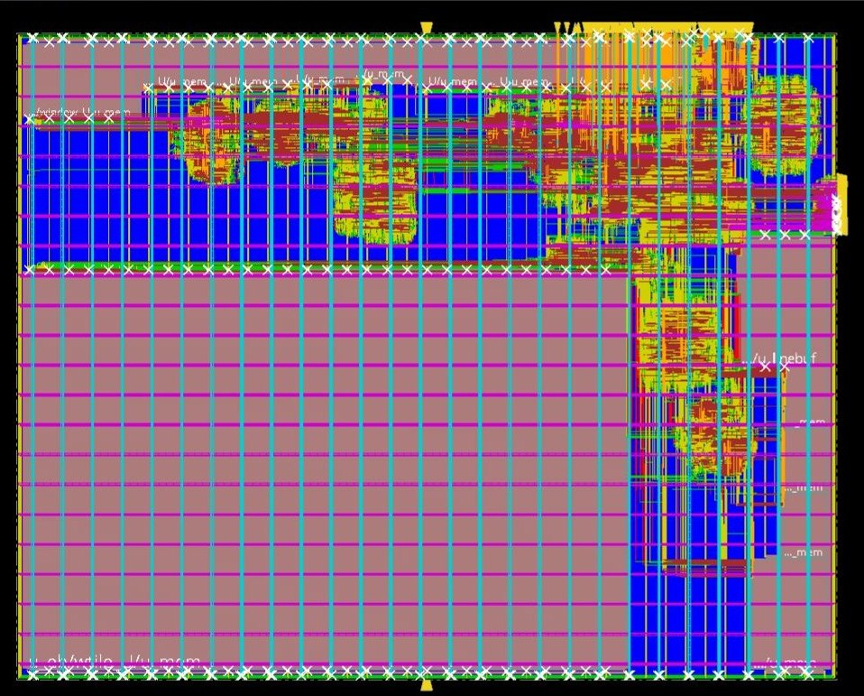
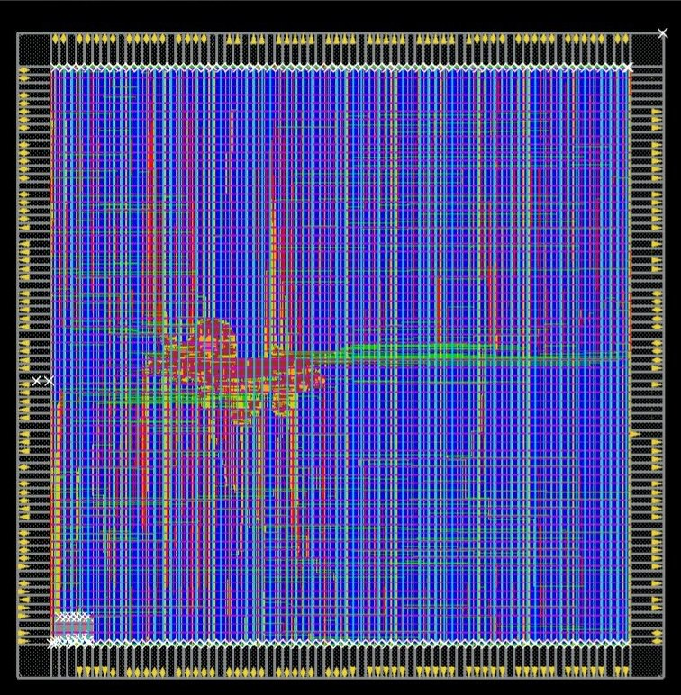
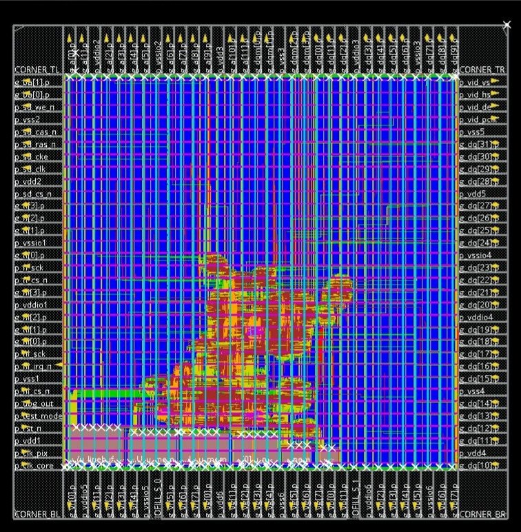
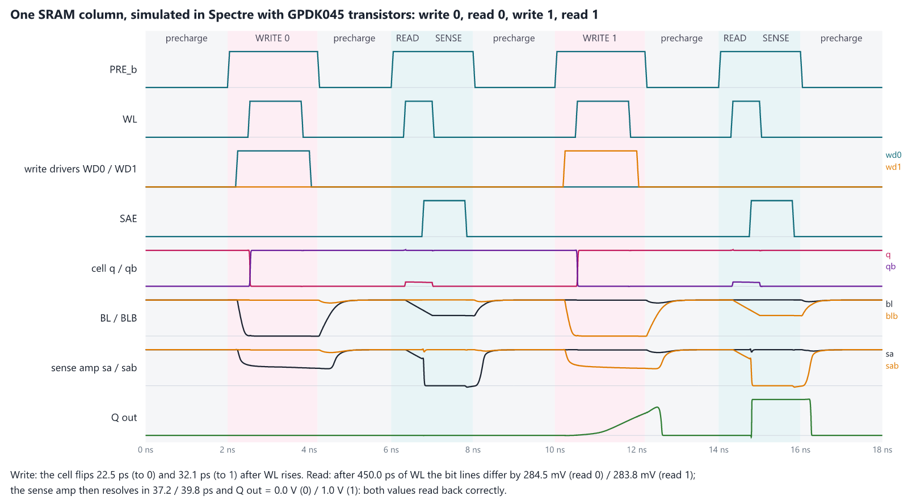

ASIC Chip of SQA-Arc Accelerator and Its Versions
Five chip designs built around the SQA-Arc accelerator, each taken from RTL to a signed-off 45 nm layout: a RISC-V controller chip, the accelerator core, and three accelerator chips that differ only in where their memory lives, plus my own SRAM macro models.
All five are academic practice designs on Cadence's generic GPDK045 (45 nm) PDK. They went through synthesis, place and route, physical verification, sign-off timing, power and rail analysis and gate-level simulation in Cadence tools, but they have not been fabricated. The SRAM macros are my own placeholder models, because the generic PDK has no memory compiler.
The Designs

RISC-V Controller Chip
A small RISC-V microcontroller ASIC with my own peripherals and C firmware: the companion chip that drives V1 and V2.
- Die
- 1.5 × 1.5 mm
- Pads
- 52
- Timing
- +1.094 ns at 100 MHz
- Power
- 1.15 mW

AI Accelerator Core
A neural-network inference core taken from verified FPGA RTL to a routed, timing-signed-off 45 nm layout.
- Clock
- 100 MHz
- Cells (synthesis)
- 72,806
- Core
- 1.65 × 1.30 mm
- Power (real activity)
- 4.28 mW

SQA V1 Chip
The accelerator as a pad-limited chip: every engine buffer lives in external SRAM, with 280 pads on a 4.68 mm die.
- Die
- 4.68 × 4.68 mm
- Pads
- 280
- Std cells
- 106,723
- Timing
- +0.062 ns, 0 violators

SQA V2 Chip
The smallest accelerator chip: the hot engine buffers moved on-chip as SRAM macros and the weights streamed from SDRAM.
- Die
- 2.4 × 2.4 mm
- Pads
- 126
- SRAM macros
- 6
- Timing
- +0.076 ns, 0 violators

SQA V3 Chip
The whole system on one die: RISC-V CPU, accelerator, 4 MB on-chip SRAM, peripherals and a 1080p display controller.
- Die
- 6.12 × 6.12 mm
- SRAM macros
- 74 (4 MB + 128 KB)
- Cells
- 149,935
- Timing
- +0.006 ns, 0 violators

Memory Design
SRAM macro models for every chip, plus a transistor-level SRAM column simulated in Spectre.
- Macro types
- 13
- Largest on-chip
- 4 MB (V3)
- Flop vs macro
- ~10 vs ~0.55 µm²/bit
Chips Compared
One accelerator core, three chips: V1, V2 and V3 reuse the same updated core and change only the memory around it, so the same tests pass bit-exact in every version. Memory decides the chip.
| Chip | Die | Pads | SRAM macros | Std cells (P&R) | Setup slack (SI) | Power (real activity) | Board parts |
|---|---|---|---|---|---|---|---|
| RISC-V MCU | 1.5 × 1.5 mm | 52 | 4 | 23,667 | +1.094 ns | 1.15 mW | with V1 / V2 |
| SQA V1 | 4.68 × 4.68 mm | 280 | 1 | 106,723 | +0.062 ns | 5.85 mW | 7 |
| SQA V2 | 2.4 × 2.4 mm | 126 | 6 | 114,718 | +0.076 ns | 6.16 mW | 4 |
| SQA V3 | 6.12 × 6.12 mm | 80 | 74 | 149,935* | +0.006 ns | 8.85 mW | 2 |
*Instances after place and route. All chips signed off at 0.9 V / 125 °C (setup) and 1.1 V / 0 °C (hold), with 0 violators of every check type.
- V1 keeps every engine buffer in external SRAM: it needs 280 pads and a 4.68 mm die that is mostly empty.
- V2 moves the hot buffers on chip and streams the weights from SDRAM: the smallest die, at 2.4 mm.
- V3 puts 4 MB of SRAM, a RISC-V CPU and the accelerator on one die: it grows to 6.12 mm, needs only a flash beside it, and runs the test operator fastest.
Sign-off Flow
- RTL design: Verilog RTL; the neural-network engines generated with Vitis HLS from C++ and checked bit-exact against a Python golden model.
- RTL simulation: Xcelium with my own board models (SDRAM, sync SRAM, QSPI flash, UART, SD card, I2C, display capture).
- Synthesis: Cadence Genus to the gsclib045 standard cells, 100 MHz core clock, slow corner.
- Place and route: Cadence Innovus: pad ring, floorplan, power grid, placement, clock-tree synthesis, routing and post-route optimisation.
- Physical verification: Cadence Pegasus DRC with the full GPDK045 rule deck, and Pegasus LVS.
- Static timing: Cadence Tempus, SI-aware, with extracted parasitics, in the slow and fast corners.
- Power and rail analysis: Cadence Voltus: power with real gate-level activity, static and dynamic IR drop, and electromigration.
- Gate-level sign-off simulation: the routed netlist simulated again in Xcelium, with and without the routed delays (SDF).
Key Design Points
- Full sign-off on all four chips. Pegasus DRC clean with the full GPDK045 deck (V3: only 61 accepted slivers on placeholder SRAM pins), LVS MATCH, Tempus SI timing with 0 violators, static and dynamic IR drop inside the 45 mV budget, electromigration clean, and gate-level simulation of the routed netlists with and without SDF delays: all PASS.
- Problems found by sign-off, not by simulation. LVS found 19 floating bond pads, a real bug that simulation could not see; electromigration found overloaded power wires on V2 and V3 although their IR drop was tiny; Tempus found a forwarded-clock constraint error on V1 and a die-wide read path on V3. All were fixed and the full sign-off repeated.
- My own memories. A placeholder SRAM macro generator (13 macro types), a flop-versus-macro cost study (about 10 vs 0.55 µm² per bit), and a transistor-level SRAM column simulated in Spectre.
- Hardware plus software. The RISC-V controller runs C firmware built with RISC-V GCC; in V3 the firmware boots from flash, runs a network operator on the accelerator and prints the result over UART, also on the routed gate-level netlist.
Current Work
V1 is being redone with an organised floorplan: a placement fence for each block, planned placement blockages, and a power grid designed from the current numbers instead of patched afterwards. On top of that, a staggered double pad ring with circuit-under-pad pads from a self-made pad variation library shrinks the die from 4.68 mm to 2.86 mm per side (about 63% less area). Place and route and sign-off of this version are in progress, so there are no final numbers yet.